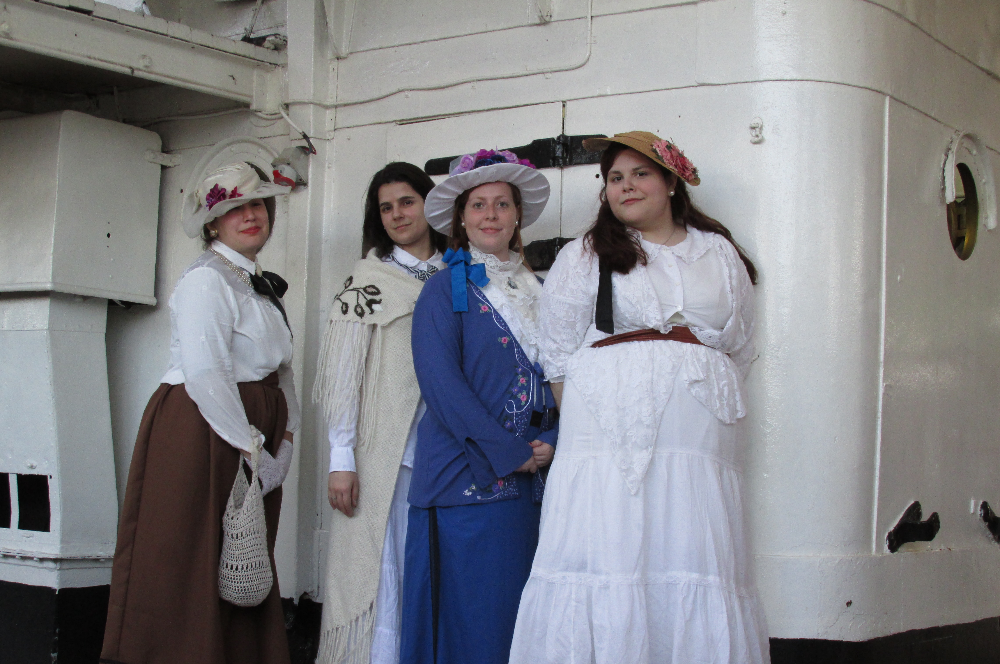

¿Qué es la recreación histórica?
Una recreación histórica no es más que la puesta en «escena» de un acontecimiento histórico, con todo lo que con ello conlleva; es una especie de gigantesca obra de teatro, pero con marcadas diferencias: la principal entre una recreación y una actuación dramática del período es el grado de inmersión en la misma, así como la posibilidad de improvisación

Historia viva
La recreación histórica no solo pretende «contar algo», sino que trata de involucrar al espectador de la historia en el acontecimiento. No simplemente divulga la historia, sino que trata de revivirla, con el fin de que el público que asiste a ella «sienta y viva»
Ver mas

Una tarde en 1900
¿Alguna vez te preguntaste cómo se sentiría viajar en el tiempo? Sabemos que, hasta el momento, no se han construído maquinas del tiempo pero si tenemos una manera de poder viajar un poquito en el tiempo, acá te contamos cómo.
Ver mas

Velada de regencia
Es una verdad universalmente conocida que toda persona que haya leído a Jane Austen querrá ir a un baile de época. ¿Qué es lo que se hace en los bailes, cuales son las reglas? Conocé todo sobre estos eventos en este artículo
Ver mas

¡Todos a bordo!
Pensemos en aquellos lujosos barcos que transportaban pasajeros en largos trayectos, por puesto no siempre eran lujosos pero en esta ocasión hablaremos de un paseo en el Museo Fragata Sarmiento
Ver mas